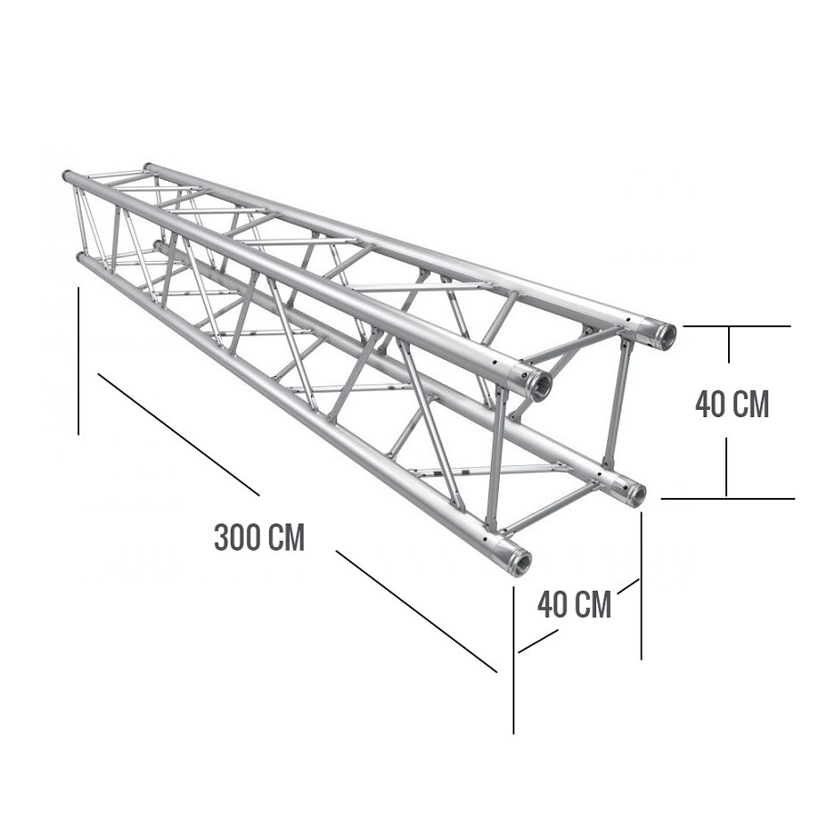

Precio:2'200.000

ESPECIFICACIONES
Cosmic Truss representa la más alta calidad y fiabilidad. El Cosmic Truss F44 es un sistema de truss de 4 puntos. Que proporciona un volumen óptimo y una capacidad de carga excelente para su tamaño de construcción de solo un diámetro de tubo de 50mm. Esta estructura está conectada a través de un sistema especial de conector cónico, que se une a un ajuste de forma completa mediante un martillo de cobre, creando una tracción óptima. El Tramo Cosmic Truss F44 es ideal para aplicación en ferias, escenarios, tarimas y tiendas, así como en cualquier evento en general. También se caracteriza por un volumen mínimo de diseño ligero especial. Los conectores cónicos están incluidos con la compra del tramo y también se puede conseguir por separado. Cosmic Truss tiene el mayor almacén de Truss en todo el mundo y es capaz de entregar todos los sistemas. Además, Cosmic Truss es el único fabricante de acoplador y rango de gancho probado por «TÜV» y «DIN» que son sellos de calidad Alemana.